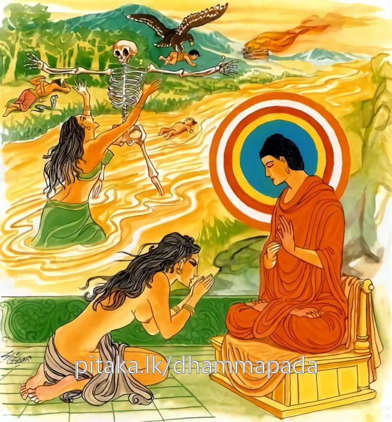
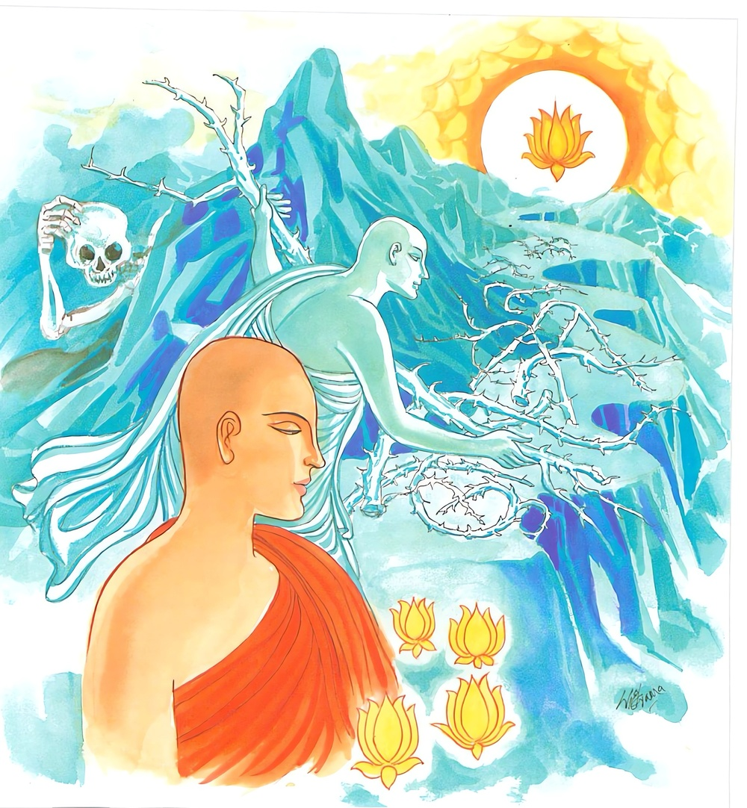

20-12 පටාචාරා
මෙම කතාව ධම්මපද අටුවාවෙන් ද කියවන්න.
න සන්ති පුත්තා තාණාය න පිතා නාපි බන්ධවා
අන්තකෙනාධිපන්නස්ස නත්ථි ඤාතිසු තාණතා.
මරහු විසින් මඬනා ලද සත්ත්වයාට ආරක්ෂා පිණිස දූ පුත්තු නො වන්නාහ. පියා ද ආරක්ෂා පිණිස නො වන්නේ ය. වැලි (සෙසු මල් බෑ බුහුන ආදි) නෑයෝ ද ආරක්ෂා පිණිස නො වන්නාහ. නෑයන් කෙරෙහි ඔහුට පිහිට වන බවෙක් නැත්තේ ය.

එතමත්ථවසං ඤත්වා පණ්ඩිතො සීලසංවුතො
නිබ්බාණගමනං මග්ගං ඛිප්පමෙව විසොධයෙ.
මෙ කරුණ දැන, නුවණැත්තේ ශීලයෙන් රක්ෂිත ගෝපිත වූයේ, නිවනට යන මඟ වහා ම පිරිසිදු කරන්නේ ය.

සම්මා සම්බුදුරජානන් වහන්සේ සැවැත් නුවර දෙව්රම් වෙහෙර වැඩ වසන සේක්, තුනී වූ ශෝක ඇති පටාචාරාව දැක “පටාචාරා! දූ පුතුන් ආදී වූ කිසිවෙක් පරලොව යන්නහුට පිහිටා හිටින්නට තැනෙක්, සැඟවී ගන්නට තැනෙක්, මේ මට පිහිටැ යි ගන්නට තැනෙක් නො වන්නේ ය, ඔවුහු හැමදා ජීවත් වන්නාහු ද නො වෙත්, මියෙන්නාහ ඔවුහු, එහෙයින් නුවණැත්තහු විසින් සිල් සමාදන් ව ගෙණ ඒ මැනැවින් රකිමින් නිවන් මග ම සාදා ගන්නට වටනේ ය”යි වදාරා මේ ධර්මදේශනාව කළ සේක.
න සන්ති පුත්තා තාණාය න පිතා නපි බන්ධවා,
අන්තකෙනාධිපන්තස්ස නත්ථි ඤාතිසු තාණතා.
.
එතමත්ථවසං ඤත්වා පණ්ඩිතො සීලසංවුතො,
නිබ්බානගමනං මග්ගං ඛිප්පමෙව විසොධයෙති.
මරහු විසින් වඩනා ලද්දහුට ආරක්ෂා පිණිස දූ පුත්තු නැත්තාහ. පියෙක් නැත. නෑයෝ ද නැත. නෑයන් කෙරෙහි පිහිටෙක් නැත.
නුවණැත්තේ මේ කාරණය දැන ශීලයෙන් සංවෘත වූයේ නිවන යන මග වහා ම පිරිසිදු කරන්නේ ය.
න සන්ති පුත්තා තාණාය = ආරක්ෂා පිණිස දූ පුත්තු නැත්තාහ.
නා පිතා න අපි බන්ධවා = පියෙක් නැත. නෑයෝ ද නැත.
නත්ථි ඤාතීසු තාණතා = නෑයන් කෙරෙහි පිහිටෙක් නැත.
පුත්ත යනු දූ පුතුන් දෙ පස කෙරෙහි ම නැගී සිටියේ ය. “පුත්තා ච දුහිතරො ච = පුත්තා” යි එකශෙෂද්වන්දසමාසයෙහි ලා පුත්ත ශබ්දය ප්රධාන බැවින් හේ ඉතිරි ව දූ පුතුන් දෙපස බලා ‘පුත්තා’යි බහුත්වය ගත්තේ ය. දුහිත්රා සහ වචනෙ පුත්රශබ්දඃවි ශිෂ්යතෙ” යනු අනුශාසනා ය. [1]
තාණ නම්: රැකීම ය. පිතා යනු යට කියන ලද්දේ ය. [2] ස්නේහයෙන් එකට බැඳුනේ බන්ධු. මේ අපගේ එකෙකැ යි ප්රෙමබන්ධනයෙන් බැඳුනේ මෙ තෙමේ ය.
අන්තක නම්: මරු ය. එක් එක් භවයෙකින් පිරිසිඳෙන සත්ත්ව ජීවිතය, ඒ ඒ භවයෙහි විනාශයට යනුයේ ද එහෙයිනි. [3] අධිපන්ත නම්: යට කොට ගන්නා ලද්දේ ය. මරුට යටත් නො වූ එක ද සත්ත්වයෙක් ලෝකයෙහි කොතනකත් නැත්තේ ය. හැම සත්ත්වයෙක් මරු නිසා ඒ ඒ භවයෙන් ගිලිහෙන්නේ ය. ඤාති නම්: මවු පසින් හා පිය පසින් පැවැත එන්නෝ ය. යට කියන ලදි. [4]
එතං අත්ථවසං ඤත්වා පණ්ඩිතො සීලසංවුතො = නුවණැත්තේ මේ කාරණය දැන ශීලයෙන් සංවෘත වූයේ.
මරුට යටත් වූවහුට පිහිට වන්නට දූ පුත්තු නැත. පියෙක් නැත. නෑ කෙනෙක් නැත. නෑයන්ගෙන් කිසිත් පිහිටෙක් නැත. යන මේ කාරණය දැන නුවණැත්තේ ශීලයෙහි පිහිටා ගන්නේ ය. දිවි ගිය ද සිල් නො බිඳින්නේ ය. මැනැවින් සිල් රකින්නේ ය. පණ්ඩිත නම්: නුවණැත්තේ ය. [5] සීලසංවුත නම්: කය වචන දෙකින් කිසිත් වරදක් නො වන ලෙසට කය වචන දෙක මැනවින් රැක ගන්නේ ය. [6]
නිබ්බානගමනං මග්ගං ඛිප්පං එව විසොධයෙ = නිවන් යන මග වහාම පිරිසිදු කරන්නේ ය.
නිවන් යන මග නම්: ආර්ය්ය අෂ්ටාංගික මාර්ගය යි. [7] එය දාන - ශීල - භාවනා වශයෙන් ගැණෙන පූර්වභාගප්රතිපත්ති පුරා විදසුන් නුවණින් සියලු සංස්කාරයන් විෂයයෙහි නිර්වෙදයට පැමිණ ස්රෝතාපත්ති ආදී වූ මාර්ගකුශලචිත්තයන් උපදවා ගැණීමට සුදුසු සේ පිළිවෙත් පිරීම, එ මග පිරිසිදු කිරීම ය. නිවන් යන මග පිරිසිදු කරන්නේ මෙ කියූ ලෙසට ය.
ධර්මදේශනාවගේ අවසානයෙහි පටාචාරා තොමෝ සෝවන් පලයෙහි පිහිටා ගත්තී ය. අන් බොහෝ දෙන ද සෝවන් ඵලාදියට පැමිණියාහු ය.
පටාචාරා වස්තුව නිමි.